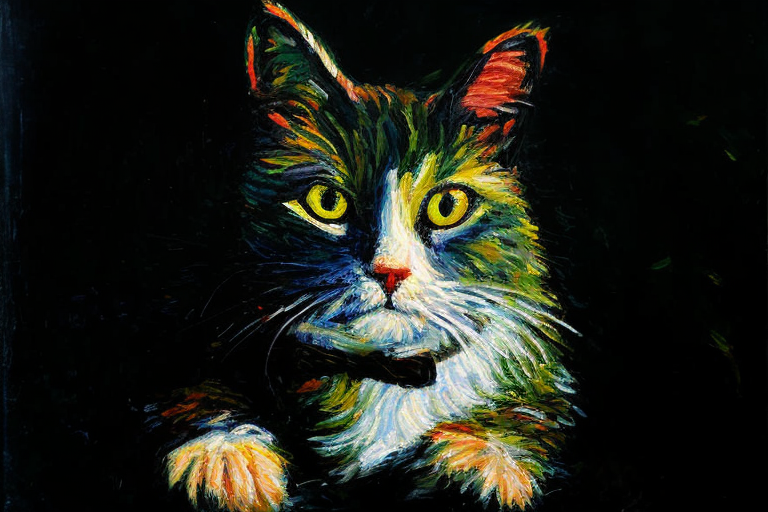

from cjm_pytorch_utils.core import get_torch_device
device = get_torch_device()
dtype = torch.float16 if device == 'cuda' else torch.float32
device, dtype('cpu', torch.float32)from cjm_pytorch_utils.core import get_torch_device
device = get_torch_device()
dtype = torch.float16 if device == 'cuda' else torch.float32
device, dtype('cpu', torch.float32)pil_to_latent (image:<module'PIL.Image'from'/opt/hostedtoolcache/Python/3 .9.16/x64/lib/python3.9/site-packages/PIL/Image.py'>, vae:diffusers.models.autoencoder_kl.AutoencoderKL)
This function converts an image to latents using a VAE model.
Returns: latents (torch.Tensor): The latents generated from the image.
| Type | Details | |
|---|---|---|
| image | Image | The image to be converted to latents. |
| vae | AutoencoderKL | The VAE model used to convert the image to latents. |
Select a model
Load autoencoder
Open sample image
Encode image
latent_to_pil (latents:torch.Tensor, vae:diffusers.models.autoencoder_kl.AutoencoderKL)
This function converts latents to an image using a VAE model.
Returns: image (PIL.Image): The image generated from the latents.
| Type | Details | |
|---|---|---|
| latents | torch.Tensor | The latents to be converted to an image. |
| vae | AutoencoderKL | The VAE model used to convert the latents to an image. |
Decode latents
text_to_emb (prompt:str, tokenizer:transformers.models.clip.tokenization_clip.CLIPTok enizer, text_encoder:transformers.models.clip.modeling_clip. CLIPTextModel, negative_prompt:str='', maxlen:int=None)
Encodes the provided text prompts using the specified text encoder.
Returns: torch.Tensor: The encoded text.
| Type | Default | Details | |
|---|---|---|---|
| prompt | str | The text prompt to be encoded. | |
| tokenizer | CLIPTokenizer | The tokenizer to be used. | |
| text_encoder | CLIPTextModel | The text encoder to be used. | |
| negative_prompt | str | The negative text prompt to be encoded. | |
| maxlen | int | None | The maximum length of the encoded text. Default is None. |
Load tokenizer
Load text encoder
Define sample prompt
Encode sample prompt
prepare_noise_scheduler (noise_scheduler, max_steps:int=50, noise_strength:float=1.0)
Prepare the noise scheduler by setting the timesteps and adjusting the noise strength.
Returns: noise_scheduler (object): The modified noise scheduler object
| Type | Default | Details | |
|---|---|---|---|
| noise_scheduler | The noise scheduler object to be modified | ||
| max_steps | int | 50 | The maximum number of steps |
| noise_strength | float | 1.0 | The strength of the noise |
Load noise scheduler
noise_scheduler = DEISMultistepScheduler.from_pretrained(model_name, subfolder='scheduler')
print(f"Number of timesteps: {len(noise_scheduler.timesteps)}")
noise_scheduler.timesteps[:10]Number of timesteps: 1000tensor([999., 998., 997., 996., 995., 994., 993., 992., 991., 990.])Update noise scheduler
noise_scheduler = prepare_noise_scheduler(noise_scheduler, 25, 1.0)
print(f"Number of timesteps: {len(noise_scheduler.timesteps)}")
noise_scheduler.timesteps[:10]Number of timesteps: 25tensor([999, 959, 919, 879, 839, 799, 759, 719, 679, 639])prepare_depth_mask (depth_map, divisor=8)
Prepare the depth mask by resizing and normalizing the depth map.
Returns: depth_mask (torch.Tensor): The normalized and resized depth mask
| Type | Default | Details | |
|---|---|---|---|
| depth_map | The depth map image | ||
| divisor | int | 8 | The divisor value used to resize the depth map |
Load depth map
Prepare depth mask
depth_mask = prepare_depth_mask(depth_map).to(device=device, dtype=dtype)
depth_mask.shape, depth_mask.min(), depth_mask.max()(torch.Size([1, 1, 64, 96]),
tensor(-1., device='cuda:0', dtype=torch.float16),
tensor(1., device='cuda:0', dtype=torch.float16))denoise_depth2img (latents:torch.Tensor, depth_mask:torch.Tensor, text_emb:torch.Tensor, unet:diffusers.models.unet_2d_c ondition.UNet2DConditionModel, noise_scheduler, guidance_scale:float=8.0)
Generate an image from a given initial image, depth map and prompt.
| Type | Default | Details | |
|---|---|---|---|
| latents | Tensor | The initial image latents | |
| depth_mask | Tensor | The image depth mask | |
| text_emb | Tensor | The embedded text prompt and negative prompt | |
| unet | UNet2DConditionModel | The Unet denoiser | |
| noise_scheduler | The noise scheduler | ||
| guidance_scale | float | 8.0 | The guidance scale |
model_name = "stabilityai/stable-diffusion-2-depth"
unet = UNet2DConditionModel.from_pretrained(model_name, subfolder="unet").to(device=device, dtype=dtype)
vae = AutoencoderKL.from_pretrained(model_name, subfolder="vae").to(device=device, dtype=dtype)
tokenizer = CLIPTokenizer.from_pretrained(model_name, subfolder="tokenizer")
text_encoder = CLIPTextModel.from_pretrained(model_name, subfolder="text_encoder").to(device=device, dtype=dtype)
noise_scheduler = DEISMultistepScheduler.from_pretrained(model_name, subfolder='scheduler')noise_scheduler = prepare_noise_scheduler(noise_scheduler, 25, 0.9)
img_latents = pil_to_latent(src_img, vae).to(device=device, dtype=dtype)
prompt = "A Monet oil painting of a cat"
negative_prompt = "bad, deformed, ugly, bad anotomy"
text_emb = text_to_emb(prompt=prompt,
tokenizer=tokenizer,
text_encoder=text_encoder,
negative_prompt=negative_prompt)
# Generate latent noise
noise = torch.randn(img_latents.shape, device=unet.device, dtype=unet.dtype)
# Add noise to the image latents at the first timestep
latents = noise_scheduler.add_noise(img_latents,
noise,
noise_scheduler.timesteps[[0]]).to(unet.device)
denoised_latents = denoise_depth2img(latents=latents,
depth_mask=depth_mask,
text_emb=text_emb,
unet=unet,
noise_scheduler=noise_scheduler,
guidance_scale=8.0)
latent_to_pil(denoised_latents, vae)